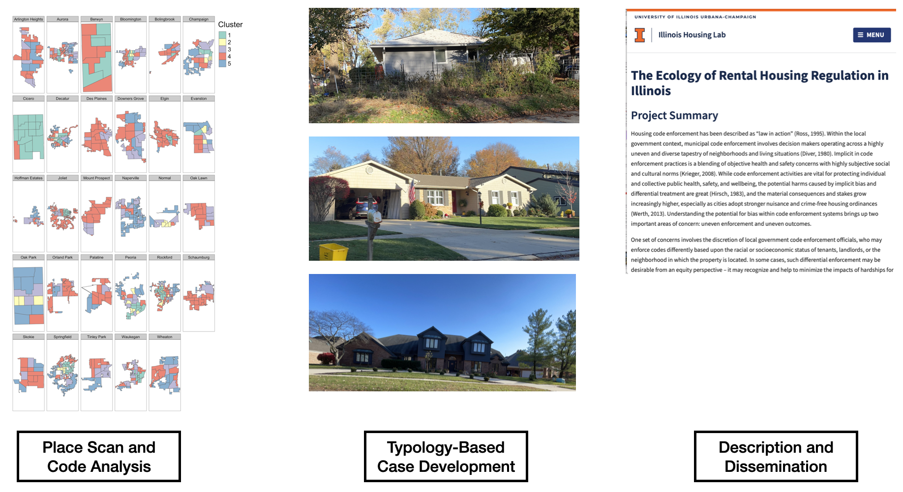

The Ecology of Rental Housing Regulation in Illinois
Project Summary
Housing code enforcement has been described as “law in action” (Ross, 1995). Within the local government context, municipal code enforcement involves decision makers operating across a highly uneven and diverse tapestry of neighborhoods and living situations (Diver, 1980). Implicit in code enforcement practices is a blending of objective health and safety concerns with highly subjective social and cultural norms (Krieger, 2008). While code enforcement activities are vital for protecting individual and collective public health, safety, and wellbeing, the potential harms caused by implicit bias and differential treatment are great (Hirsch, 1983), and the material consequences and stakes grow increasingly higher, especially as cities adopt stronger nuisance and crime-free housing ordinances (Werth, 2013). Understanding the potential for bias within code enforcement systems brings up two important areas of concern: uneven enforcement and uneven outcomes.
One set of concerns involves the discretion of local government code enforcement officials, who may enforce codes differently based upon the racial or socioeconomic status of tenants, landlords, or the neighborhood in which the property is located. In some cases, such differential enforcement may be desirable from an equity perspective – it may recognize and help to minimize the impacts of hardships for tenants and landlords. Conversely, such discretion may increase housing instability, eviction, and displacement. Policy evaluation can help to uncover when and where such regulatory discretion is racialized, the consequences for tenants, landlords, and government, and the ways in which such discretion addresses or exacerbates local government and neighborhood equity concerns.
The second area of immediate concern involves the contribution of code enforcement to evictions during the COVID-19 pandemic. Renters are currently protected by an uneven patchwork of federal, state, and local eviction moratoriums. While eviction moratoria provided protections for tenants from non-payment of rent, eviction for other reasons can proceed regardless of health and safety consequences despite evidence that evictions increase the spread of COVID (Nande, et al., 2021). Landlords may turn to justifications that are supported by nuisance or code enforcement violations as opposed to non-payment of rent as a lever to remove tenants amidst a continually evolving public health crisis (Layser, et al., 2021).
In response to these two domains of concern, we evaluate local government rental property regulation and the application of nuisance and crime-free housing ordinances to assess the extent to which discretionary enforcement increases affordability, housing stability, and access to resource-rich neighborhoods, especially for people of color. Our goal is to use evaluation methods to inform code enforcement approaches that avoid targeting on the basis of race or income, avoid displacement, maintain affordable rental units, and provide landlords with opportunities to secure financial resources for property improvements. We propose conducting an in-depth comparative evaluation of the 28 local governments in Illinois with populations between 50,000 to 500,000, with the idea that variations observed in larger or smaller cities are likely to be more idiosyncratic or due to other complicating factors.

This evaluation reflects a novel partnership between policy advocates and researchers that leverages Housing Action Illinois’ connections with local communities, commitment to storytelling for change and centering the voices of people with lived experiences in their policy efforts, and a diverse practice-focused audience for evaluation findings, with University of Illinois’ advanced housing policy research capacity and opportunities to train emerging policy practitioners and researchers. The evaluation brings together code enforcement stakeholders’ perspectives to contextualize local trends associated with racial segregation, housing instability, and eviction – all revealed as major issues for Illinois’ cities outside of Chicago in a 2019 Governing Magazine investigation Segregation in the Heartland (Vock, Charles, and Maciag, 2019). We draw upon a combination of traditional policy evaluation techniques coupled with documentary video to develop policy-informed narratives to share with local governments, landlords, and tenants, but also with housing advocates and housing policy and legal researchers.
Funder
Robert Wood Johnson Foundation Policies for Action
Institute of Government and Public Affairs
Partners
Staff
Andrew Greenlee (PI), Illinois Housing Lab
Sharon Legenza (PI), Housing Action Illinois
Foluke Akanni, Housing Action Illinois
Mare Ralph, Housing Action Illinois
Anagha Devanarayanan, Illinois Housing Lab
Bob Palmer, Housing Action Illinois
Jon Petty, Illinois Housing Lab
Emma Walters, Illinois Housing Lab
David Wright, Illinois Housing Lab
Publications
Code Enforcement as a Tool for Safe, Equitable & Affordable Housing (PDF)